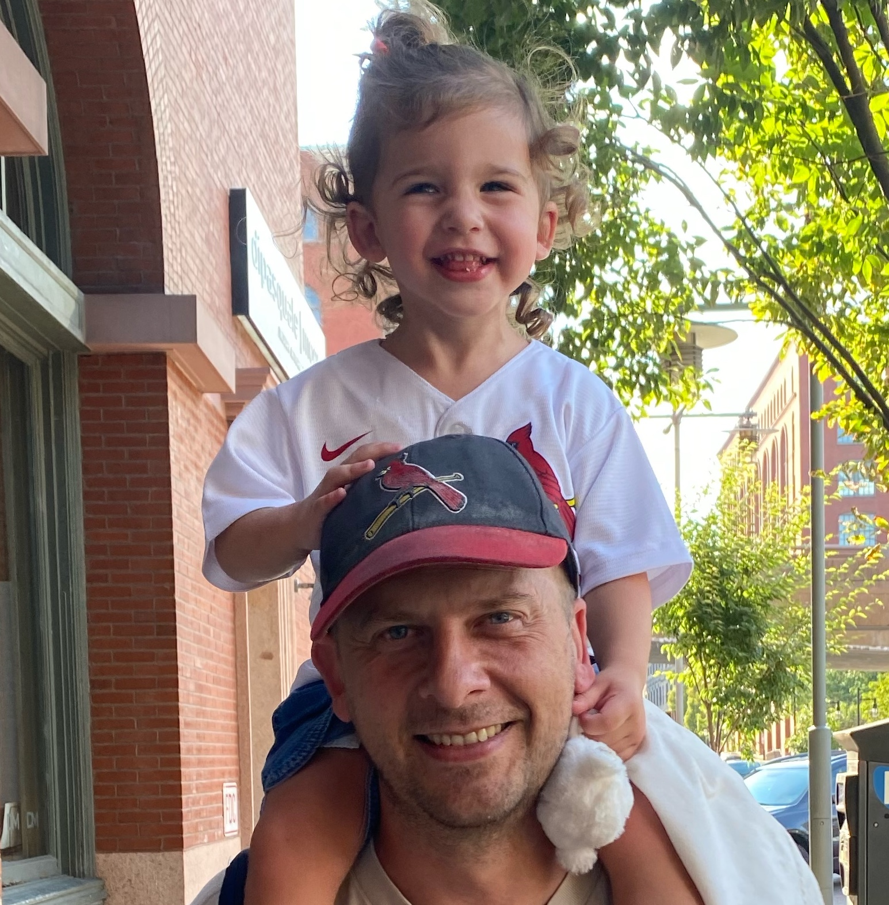
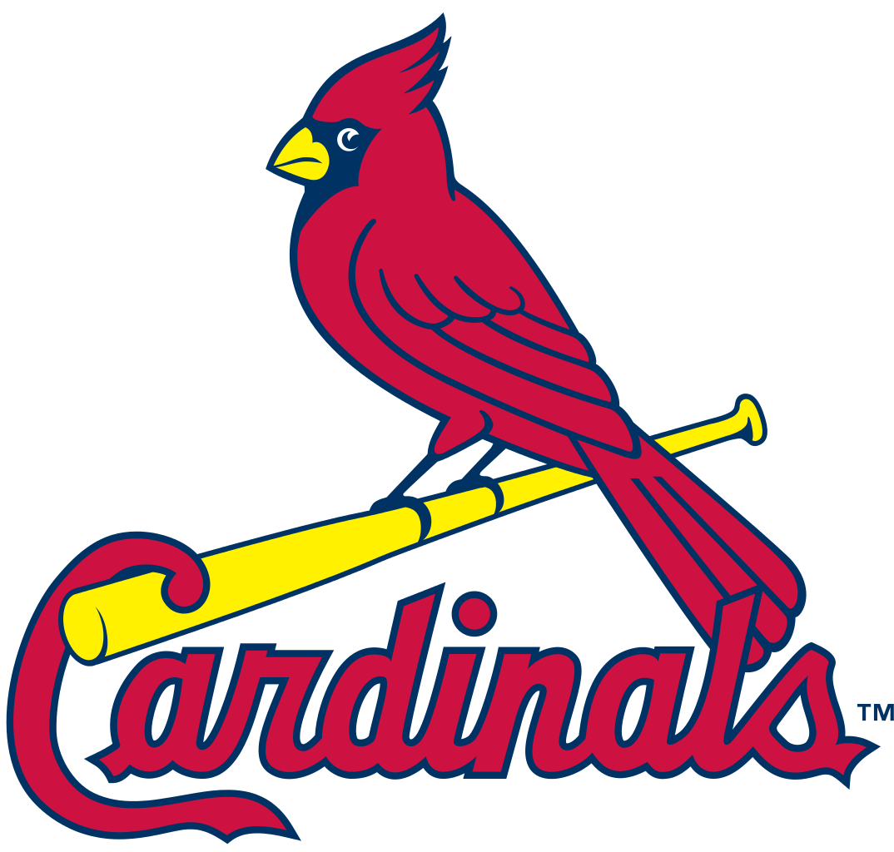

 I grew up in Southwest Missouri on a farm and I think that really helped me to develop an appreciation of family and community and how both interact with the world around them. I attended the University of Missouri at Columbia and even though I worked with computers daily at my job, I chose to get a degree in the Hospitality field. Years later I am revisiting my old passion of computers and attended the Actualize Coding Bootcamp.
Although I have lived in several different states over the years, I am back in my home state of Missouri to stay. I am currently living in Saint Louis which is where I met my wonderful wife. I am currently looking for a remote software developer job that can utilize my full stack training. I am also open to the cybersecurity field as this is something that I would like to become proficient in for the future.
On a personal note I am an avid sports fan for my Missouri teams. I of course am a devout follower of Mizzou sports. I am also a Kansas City Chiefs fan and always have hopes of another Super Bowl Championship. I also am a long time supporter of the Saint Louis Cardinals and Blues organizations and try to go to games whenever I get the chance. I look forward to taking both of my children to sporting venues as soon as they can sit through an entire game. I also am a big outdoor enthusiast and find my childhood passions drawing me back to nature. I practice sustainable companion gardening with no-till practices and 100% organic with no use of pesticides or poisons. I am also a devout conservationist who believes in protecting all of our natural resources and native plants and animals. I enjoy fishing and hunting but I only harvest what I intend to use, otherwise I catch-and-release fish and only shoot animals with a camera.
